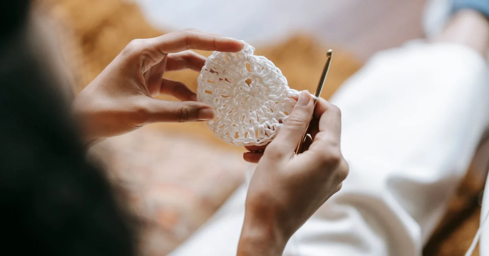

Beginner Projects · Beginner guide
How to Choose Your First Crochet Project
Choose a first crochet project with a few techniques, accessible materials, and a result you want to make.

A good first project leaves room to learn without requiring many new skills at once. The simplest choice depends on your interests and pattern support.
Before you begin
Check skill level, abbreviations, materials, dimensions, and whether the instructions explain row or round counts.
Step-by-step instructions
- Pick an idea such as a swatch-based scarf, small cloth, or motif that uses techniques you know.
- Read the full pattern and note unfamiliar stitches or construction steps before buying materials.
- Check yarn, hook, care needs, and whether the project requires sewing or shaping.
- Choose something easy to pause and resume. Make a practice swatch if a stitch or gauge is new.
What to check
Choose by technique, not dimensions
A small item may involve shaping or color changes; a larger rectangle can be simple if it repeats one stitch. Judge the instructions, not only finished size.
Frequently asked questions
Is a scarf always the easiest first project?
No. It may repeat one stitch but require many rows. A swatch or motif can be a shorter practice exercise.
Should I buy yarn before reading the pattern?
Read its materials and instructions first so you can choose a suitable yarn and amount.
Choose a project with clear instructions
For choosing a first project, use this as the starting rule: choose a project with a small number of unfamiliar techniques and instructions you can follow at your current level. The publisher’s key and terminology tell you how to read that specific set of instructions. Read the relevant instructions before beginning and keep them nearby as you work. If a general tutorial and the pattern give different directions, follow the pattern’s stated convention; another project may use a different method.
Check the stitches you already know
Before proceeding, confirm whether the pattern explains abbreviations, gauge, shaping, and finishing. Write any project-specific choice in your notes so you can apply it consistently. If the pattern or label leaves the detail unclear, look for its own key or maker guidance rather than assuming that another project follows the same convention. This short check can prevent a small misunderstanding from affecting the rest of the work.
Read materials and care notes
A practical way to apply choosing a first project: Take one short instruction from a pattern and read the full materials and skill notes before starting. Mark the line, chart row, or repeat where you stopped, then check that the next step follows from the key and count. Working through a small section on paper or in a swatch can expose unfamiliar notation before it affects a larger part of the project.
Consider shaping and finishing steps
A common mistake in choosing a first project is choosing only by appearance without checking construction demands. Watch for this sign: the project introduces several new skills at once. That can shift the stitch, repeat, or chart symbol and alter the instruction sequence. Compare the recent work with the pattern and locate the first point where they differ. Correct that detail before continuing; stretching the fabric or adding an unplanned step can hide the cause without fixing it.
Look for a manageable pattern repeat
If the project introduces several new skills at once, first check whether the pattern explains abbreviations, gauge, shaping, and finishing. Then compare the terminology, key, repeat marks, and row or round count with what you actually have. Change one thing at a time so you can tell whether it addresses the problem. If the instructions and materials match but the result still differs, use the project’s gauge, sizing, substitution, or care notes as relevant; those are more useful than a universal fix.
Avoid taking on too many new skills
Remember: a manageable first project leaves room to practice each technique. A publisher’s notation is specific to its pattern, so write down the terminology and symbols you have confirmed. If you choose an alternative, record it and compare a small sample or written step before applying the change across the project.
Choose a first project you can follow
To make choosing a first project easier to repeat, use this sequence: read the full materials and skill notes before starting, inspect the result, and only then continue. At first, slow down at the point where the pattern changes direction, begins a new round, or starts a repeat. A removable marker or brief row note can hold your place while you learn the construction. Once the sequence is clear, you can work more steadily without guessing which loop or instruction comes next.
Conclusion: Choosing a first project
Keep this lesson in mind: a manageable first project leaves room to practice each technique. Keep the verified key and terminology beside the instructions. A first project can teach one or two new skills; several unfamiliar techniques at once can make pattern troubleshooting harder.